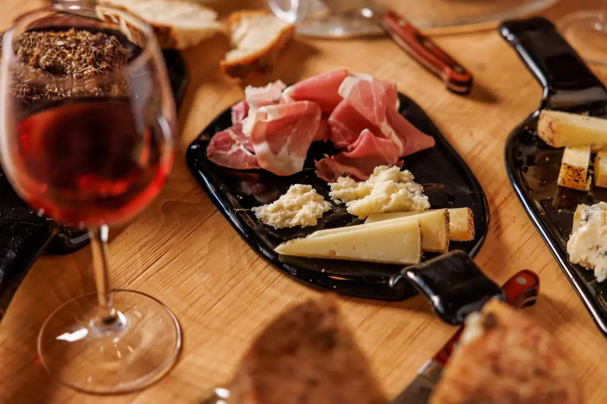

Regali 25 dollari ai suoi ospiti e ne riceva 15 per ogni prenotazione
Con il referral di Airbnb, consigliare Taste'accio non le costa niente: il buono e i 15 dollari li paga Airbnb. Siamo la prima grotta di affinamento urbano d'Europa, alla base del Monte dei Cocci: gli ospiti che ci manda mangiano dentro un monumento.
Le rispondiamo dal 389 583 4072.
Cosa trovano i suoi ospiti
Scendono in una grotta di duemila anni e si siedono fra le forme in stagionatura. A tavola raccontiamo da quale paese del Lazio arriva ogni assaggio.
Il referral in tre passi
Prima, venga a vederla
Su appuntamento, senza assaggio, le mostriamo la grotta: così sa cosa consiglia.
Fissi la visita1 · I tre link da mandare nella chat di Airbnb
2 · Il testo pronto, in italiano e in inglese
3 · Come si imposta
Su Airbnb apra Messaggi, poi le impostazioni e «Gestisci le risposte rapide»; scelga «Crea» e incolli il testo pronto: da quel momento lo manda con un tocco. Oppure, dentro una conversazione, tocchi «+» e «Condividi consigli».
Chi ci è stato
Le recensioni lasciate su Google, Airbnb, GetYourGuide e Tripadvisor, con le loro parole.
Ho degustato salumi e formaggi davvero unici, coccolata dal personale davvero molto gentile, un'esperienza immersiva in un sito archeologico che vale davvero la pena visitare. Ho apprezzato anche i cocci romani a vista e le opere d'arte contemporanea sparse nella grotta. Esperienza super consigliata!
Un’esperienza stupenda sui formaggi con un host d’eccezione. Vincenzo è preparatissimo sul mondo dei formaggi, sulla produzione e sulla loro storia. Questo ci ha permesso non solo di imparare a preparare un tagliere, ma anche di scoprire molto di più su questo affascinante mondo. Location anch’essa unica: una grotta all’interno del Monte dei Cocci, curata e allestita con grande attenzione. Super consigliato
Varrebbe la pena di prenotare questa esperienza, anche solo per vedere la location. Si entra in una grotta che confina con il monte dei cocci in un’atmosfera incredibile circondati da formaggi ed opere d’arte. Abbiamo preparato un tagliere con dei formaggi incredibili unici accompagnati da un buonissimo vino con un Host d’eccezione che ci ha spiegato tutto circa formaggi taglieri, come tagliare come gustare, insomma un’esperienza davvero meravigliosa.
Our host was very informative. He spoke in Italian and had an interpreter. We learned a great deal about how to present cheese on a cheese board and in which order to taste the cheeses. We both loved the experience. Thank you